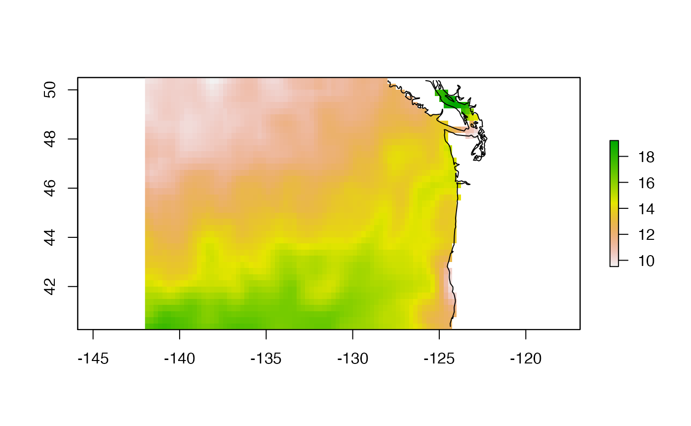
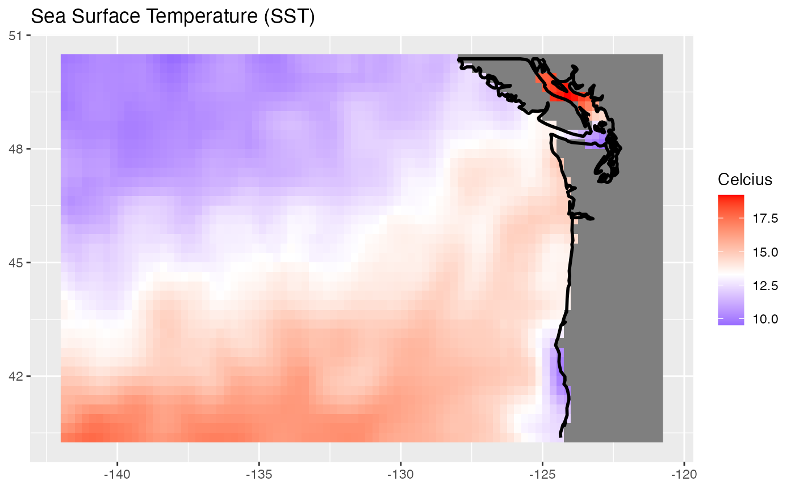
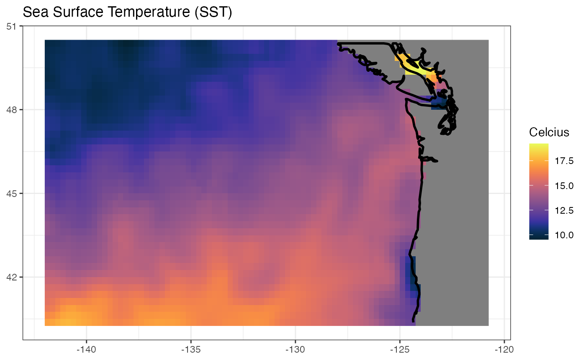
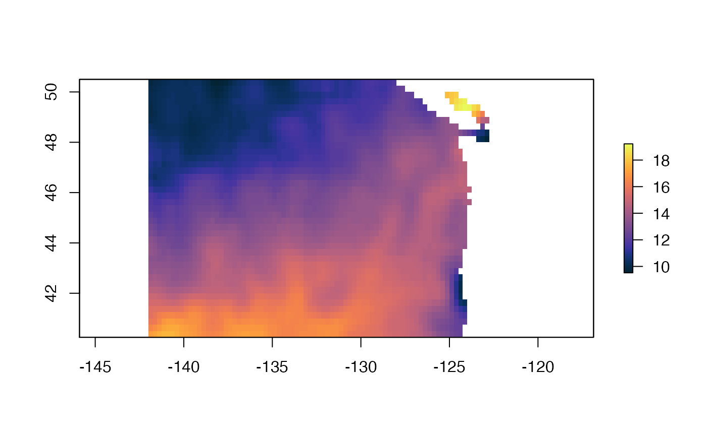
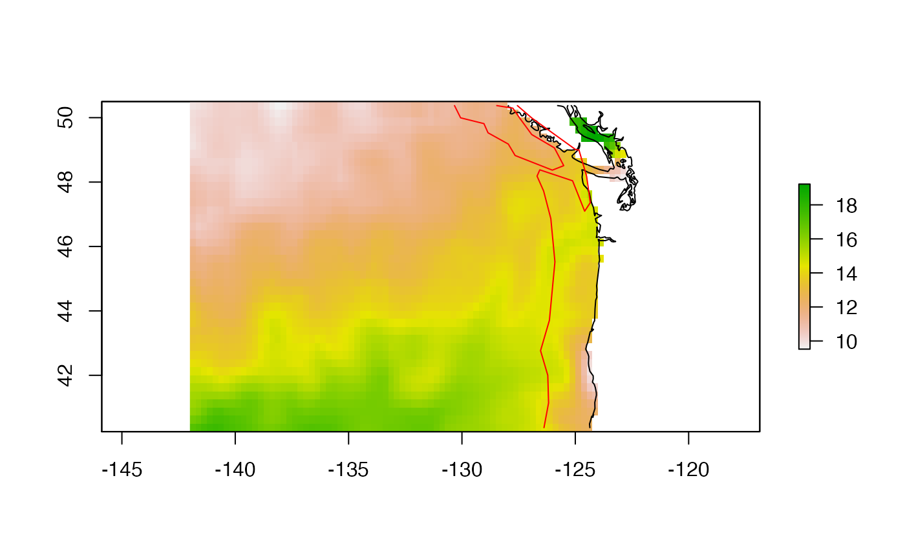
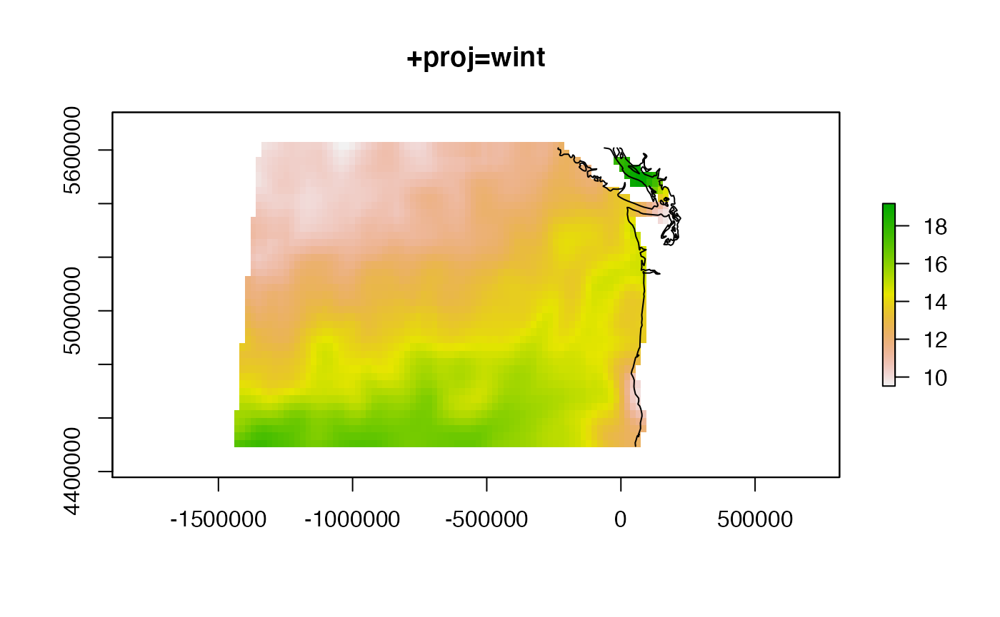

This example assumes that you have a sample raster. You can load the sample one or go to the download data vignette to download your own. sample_raster is a demo SST raster and data frame.
Load the sample data.
data("sample_raster", package="basics")
df <- sample_raster$df
ras <- sample_raster$raster
lons <- sample_raster$lons
lats <- sample_raster$latsLoad the needed packages for plotting.
## Loading required package: raster## Loading required package: sp## Loading required package: ggplot2There are a variety of places you can get a coastline.
You can download via raster.
coast <- raster::getData("GADM", country = "USA", level = 1)
wa_or_coast <- subset(usashp, NAME_1 %in% c("Washington", "Oregon"))Or you could get it from rnaturalearth which is quite a bit faster. With scale=50, the coastline has some detail. You could pass in scale of 110 or 10.
coast <- rnaturalearth::ne_coastline(scale = 50, returnclass = "sp")I’ll use rnaturalearth. The coast just downloaded is for the whole world. We’ll want to crop that down to our region. Note I need to use library(raster) so that I have access to the plot methods for spatial objects.
library(raster)
wa_or_coast <- raster::crop(coast, raster::extent(lons[1], lons[2], lats[1], lats[2]))
plot(wa_or_coast)## Warning in wkt(obj): CRS object has no comment
We can plot with ggplot2 also.
require(ggplot2)
# Plot
gg <- ggplot(df) +
geom_raster(aes(lon, lat, fill = sst)) +
scale_fill_gradient2(midpoint = mean(df$sst, na.rm = TRUE),
low = "blue",
mid = "white",
high = "red") +
labs(x = NULL,
y = NULL,
fill = "Celcius",
title = "Sea Surface Temperature (SST)")The way that ggplot2 works is to run fortify() on the SpatialLines object to create a data frame. Then we use geom_path() to plot that. But if you look at the coast, you see lots of islands. We need to tell geom_path() that there are these groups of paths in the data frame.
## Warning: Ignoring unknown aesthetics: grouping
gg
Let’s use the cmocean package to use it’s thermal palette.
library(cmocean)
gg + scale_fill_cmocean(alpha=1) + theme_bw()## Scale for 'fill' is already present. Adding another scale for 'fill', which
## will replace the existing scale.
We can use this for our raster plot too.

coast110 <- rnaturalearth::ne_coastline(scale = 110, returnclass = "sp")
coast110 <- raster::crop(coast110, raster::extent(lons[1], lons[2], lats[1], lats[2]))
offcoast <- raster::shift(coast110, dx=-2)
The default raster plot is a bit deformed since it is long-lat on the x and y axis. We can see what it would look like in a different projection.
newcrs <- "+proj=wintri +lon_0=-125 +lat_1=46 +x_0=0 +y_0=0 +datum=WGS84 +units=m +no_defs"
ras_win <- projectRaster(ras, crs=newcrs, over=T)
plot(ras_win)
plot(spTransform(wa_or_coast, newcrs), add=TRUE)## Warning in spTransform(xSP, CRSobj, ...): NULL source CRS comment, falling back
## to PROJ string## Warning in wkt(obj): CRS object has no comment